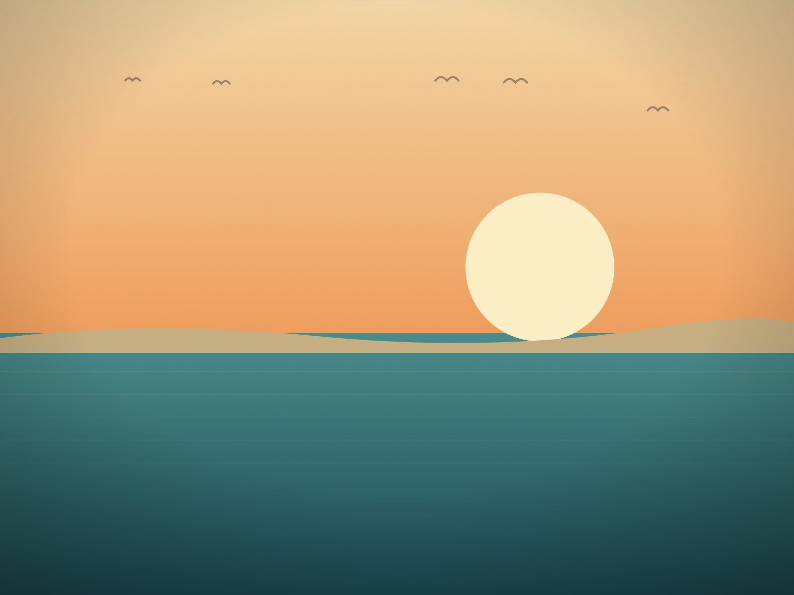
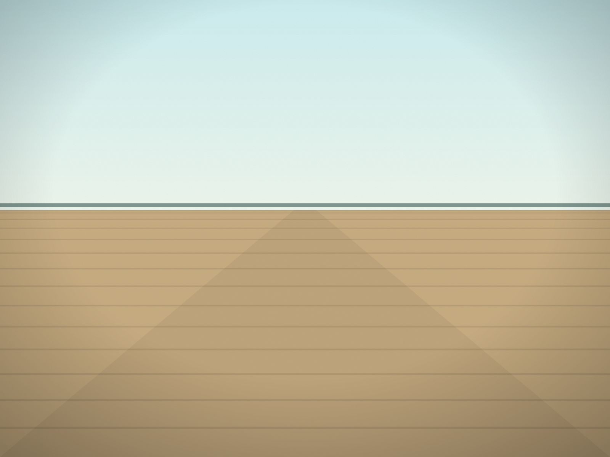
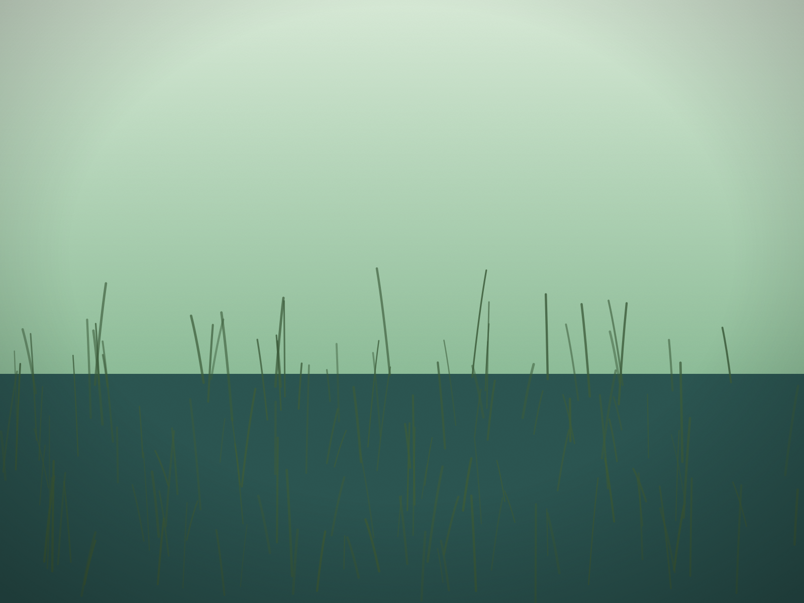

Every story, in one place.
Field notes from the whole Delaware coast — dawn shifts, hidden trails, boardwalk rituals and the towns that hold them.

The Six O'Clock Shift at Indian River Inlet
Every morning the surfcasters pack up right as the paddleboarders wade in — a ten-minute handoff between two different Delawares.

What the Boardwalk Smells Like in July
Grotto pizza, salt water taffy and sunscreen, in that order, from the top of Rehoboth Avenue to the water.

A Field Guide to Bethany's Bandstand Nights
Beach chairs go down by 7, the band starts by 8, and nobody in Bethany seems to be in a hurry to leave once it's over.

The Unmarked Trail Behind Gordons Pond
Most people park at Gordons Pond, walk the boardwalk to the beach, and turn around. The trail that keeps going is where the park gets quiet.

Low Tide at Assateague Is a Different Island
When the water pulls back, the horses come down off the dunes to graze flats that don't exist three hours later.